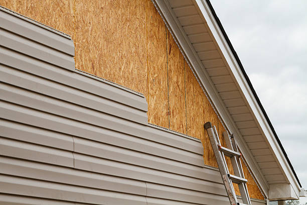

USA - Nationwide
info@bestroofingandsiding.pro
USA - Nationwide
info@bestroofingandsiding.pro

Enhance your business's appearance with specialized commercial siding contractors . We ensure quality and durability for all commercial projects.
Our commercial siding contractors in Usa - Nationwide specialize in durable, attractive solutions tailored for businesses. Improve energy efficiency and appearance with our expert installations today.
Residential & commercial siding
Quality services at affordable prices
Immediate 24/ 7 emergency services


When it comes to transforming the exterior of your home or business, you want the best siding contractors near you . At our company, we pride ourselves on our skilled team of professionals, committed to delivering unparalleled siding solutions tailored to your needs. Our contractors are equipped with years of experience, ensuring that every installation is executed with precision and care. We understand that your property is one of your most significant investments, and our team works diligently to uphold its value and aesthetic appeal.
Choosing us means choosing quality and reliability. Our siding contractors are fully licensed and insured, providing you with peace of mind. We use high-quality materials suited to the unique climate conditions of Usa - Nationwide, ensuring durability and longevity. Customer satisfaction is our top priority, and we strive to exceed your expectations on every project. Our extensive selection of siding options allows you to find the perfect fit for your property’s style, whether you prefer traditional vinyl, rustic wood, or eco-friendly materials.
Reach out today to schedule your consultation and discover why we are the leading siding contractors .

Selecting the best siding company is essential for ensuring the longevity and durability of your home’s exterior. With so many options available, it can be overwhelming. However, our company ranks among the best siding companies near me in Usa - Nationwide. We pride ourselves on our outstanding reputation and large portfolio of successful projects.
Our team comprises experienced professionals who understand the intricacies of siding installation and repair. We take pride in providing the best customer service, ensuring your project is completed on time and exceeds your expectations. The quality of our materials and craftsmanship speaks for itself, making us the top choice for homeowners and businesses alike in Usa - Nationwide.

Vinyl siding has become one of the most popular choices for homeowners due to its durability, aesthetic appeal, and low maintenance requirements. Our vinyl siding installation services are second to none, thanks to our experienced team and high-quality materials.
When you choose us for your vinyl siding installation, you can expect meticulous craftsmanship that guarantees a perfect fit and finish. Our vinyl siding is available in a variety of colors and textures, allowing you to customize the look of your home. Energy efficiency is also a key benefit of our vinyl siding; it can significantly reduce your heating and cooling costs, making your home more comfortable year-round.
Moreover, our company stands out by ensuring that all installations adhere to local building codes and regulations in Usa - Nationwide. We work closely with our clients to ensure their vision for their home becomes a reality. Choose us for your vinyl siding installation, and enjoy a combination of quality, beauty, and innovation!

Many homeowners believe that quality siding comes at a premium price, but that is not the case with our affordable siding installation services . We believe that everyone deserves a beautiful and durable home without breaking the bank. Our competitive pricing, along with our dedication to quality, makes us the go-to choice for budget-conscious homeowners.
We offer a range of siding materials to fit every budget, ensuring that you can find the right option for your needs. Our experienced team works diligently to deliver results that you will love, all while keeping costs transparent and manageable. Trust us to provide an affordable solution that doesn’t compromise on quality or aesthetics.

Over time, your home's siding can become worn down or damaged due to weather elements or general wear and tear. Our siding repair services in Usa - Nationwide are designed to restore the look and integrity of your home, ensuring it remains both beautiful and functional. Whether you have cracks, warping, or mold growth, our team can identify the issue and provide effective solutions.
We specialize in a range of siding materials, and our experts are equipped with the skills and tools needed to make the necessary repairs. By choosing our siding repair services, you are securing the longevity of your home’s exterior, enhancing its curb appeal, and protecting your investment for years to come.

Your home is your sanctuary, and the siding you choose plays a vital role in its appearance and functionality. Our residential siding installation services are tailored to meet your specific needs and preferences. We offer a variety of styles, colors, and materials to ensure that your home reflects your unique taste.
Our professional team possesses the expertise to properly install any siding type, including vinyl, wood, or fiber cement. We focus on detail, ensuring your installation is completed to the highest standards. With our commitment to customer satisfaction and quality service, we aim to exceed your expectations at every turn.

Searching for local siding installers? Look no further. Our team of local experts is dedicated to meeting the unique needs of the community . We take pride in contributing to the look and feel of residential and commercial spaces in our area.
Our local presence allows us to understand the specific siding requirements dictated by our climate and geography. We approach each project with a personalized touch, ensuring that your home or business stands out in the neighborhood. Selecting us means choosing a community-focused company that prioritizes quality and service.

As your home ages, siding may deteriorate, affecting its structural integrity and visual appeal. Our siding replacement services prioritize restoring your home's former glory while upgrading to more durable and energy-efficient materials. Whether your siding fades, peels, or becomes damaged, our team delivers “new-life” solutions specifically tailored to your needs.
We utilize various materials, including premium vinyl and fiber cement, to ensure that our siding replacement enhances your home’s longevity. Our project starts with a comprehensive evaluation of your existing siding, enabling us to determine the best course of action regarding replacement. Our experienced team ensures a seamless replacement process, minimizing disruption while maximally enhancing your property’s value.

Receiving accurate siding installation cost estimates is crucial when planning your siding project. We offer free consultations where we thoroughly evaluate your property and outline all potential costs associated with different siding materials and installation processes. Understanding your budget and goals helps us present a clear picture of what you can expect regarding expenses.
Our estimates are transparent, listing material costs, labor, and any additional factors that may impact your budget. We work with you to identify the most cost-effective options that align with your vision while ensuring high-quality results. Client satisfaction is our priority; thus, we strive to provide budgeting guidance to make informed and sound decisions regarding your siding installation project.

Custom home siding installation is our specialty. We understand every home tells a story, and the right siding can enhance that narrative. Our company offers tailored siding solutions that reflect your personal style and meet your specific needs. We believe in the creative potential of every home and strive to provide siding that embodies your vision.
Our experienced team works closely with you from the initial design phase to installation, ensuring that every aspect of your home’s exterior capsulates your preferences. We offer a wide array of materials, colors, and styles, allowing you to create a distinctive look for your home.
Choosing us for your custom home siding installation means choosing a partner who values your input and guarantees quality workmanship. We take pride in our attention to detail and customer satisfaction, ensuring your home in Usa - Nationwide is not just aesthetically pleasing but well-protected for years to come.

In today’s eco-conscious world, energy-efficient siding options are not just a trend—they are a necessity. We offer a selection of energy-efficient siding that helps reduce energy costs while improving your home’s comfort.
Siding with high R-value insulation can significantly decrease your energy costs, keeping your home warm in the winter and cool in the summer. We work with leading manufacturers to bring you high-quality materials that are both stylish and energy-efficient. Partner with us to enhance your home's energy performance, and enjoy long-term savings.

Choosing the best siding materials for your home is essential to ensure durability, maintenance, and aesthetic appeal. Our company offers a wide selection of siding materials that meet both functionality and style requirements.
Our experienced team can guide you through the pros and cons of various siding materials, including vinyl, wood, fiber cement, and aluminum. We ensure you make an informed decision based on your home’s architecture, climate, and budget.
We take pride in sourcing high-quality materials that come with excellent warranties, giving you confidence in your investment. Let us help you choose the best siding materials for your home that provide lasting beauty and protection. Reach out to us today!

Siding installation for new construction in Usa - Nationwide is a critical step in the building process that can significantly enhance the aesthetic and functional aspects of a property. Our company specializes in providing expert siding installation services tailored for new builds, ensuring that your project runs smoothly and efficiently from start to finish.
Our team is experienced in collaborating with builders and contractors, understanding the specific requirements that come with new constructions. We offer a wide variety of siding materials to choose from, allowing you to create an exterior that meets your architectural vision while providing protection and insulation.
By choosing our siding installation services for your new construction you can expect professionalism, quality craftsmanship, and a commitment to meeting deadlines. We pride ourselves on delivering seamless installations that set the foundation for beautiful and durable homes.

Your home deserves the best, and our siding and window installation services ensure that you get just that. As a complete exterior solution provider, we can enhance both your siding and windows, providing a cohesive and polished look to your property.
Both siding and windows play pivotal roles in maintaining your home’s energy efficiency and aesthetic appeal. With our experienced team, you can trust that both installations will be done with precision. We use high-quality materials and innovative techniques to ensure your new siding and windows are functional, energy-efficient, and beautiful.

If you are looking for a resilient and low-maintenance option for your home, consider our fiber cement siding installation services . Fiber cement siding has gained popularity due to its durability, resistance to pests, and aesthetic versatility.
Our expert team is fully trained and experienced in installing fiber cement siding, ensuring a flawless finish that protects your home while enhancing its curb appeal. We commit to using only the finest materials ensuring you invest in a siding solution that will require minimal upkeep and withstand the elements for years.

If your vinyl siding has suffered wear and tear or unexpected damage, our vinyl siding repair services near you in Usa - Nationwide can restore its functionality and appearance. Our skilled technicians have extensive experience in identifying and repairing issues such as cracks, holes, and warped panels.
We utilize high-quality replacement materials that match your existing siding, ensuring a seamless repair that maintains the aesthetic appeal of your home. Our commitment to excellence ensures that we address the root cause of your siding issues, preventing further damage in the future.
Choosing us for your vinyl siding repair means choosing fast, reliable, and effective solutions. Contact us today for quick repairs and restore your siding to its former glory!

Wood siding installation services is a great option for homeowners looking to achieve a classic and timeless look for their homes. Our company specializes in all aspects of wood siding installation, ensuring that your home not only looks beautiful but is also well-protected against the elements.
Wood siding offers exceptional aesthetic appeal, and with proper installation and maintenance, it can last for many years. Our experienced installers are skilled in working with various wood types, providing insights into the best options based on your home's architecture and your budget.
Choosing our wood siding installation services means choosing quality craftsmanship and a commitment to customer satisfaction. We take pride in our attention to detail and dedication to delivering a flawless installation that enhances your home’s beauty in Usa - Nationwide.

Siding maintenance services are essential for preserving the beauty and longevity of your home's exterior. Regular maintenance can prevent significant damage, saving you money on costly repairs and replacements. Our company offers comprehensive siding maintenance services tailored to your specific needs.
Our expert team can perform inspections, cleaning, and necessary repairs to ensure your siding remains in top condition. We are knowledgeable about all types of siding materials, ensuring that we can provide the right care for your particular siding type.
By choosing our siding maintenance services, you're investing in the longevity of your home’s exterior. We are committed to providing thorough and affordable maintenance helping you protect your investment for years to come.

As one of the leading local siding companies in Usa - Nationwide, we understand the unique needs and preferences of homeowners in your community. Our commitment to quality service, exceptional craftsmanship, and personalized solutions sets us apart from other companies.
We offer a diverse range of siding materials and installation services, ensuring that each project is tailored to the specific requirements of your home. With years of experience in the industry, our knowledgeable team is always ready to provide insights and recommendations to help you make informed decisions.
Choosing a local siding company means supporting your community while receiving personalized service. We take pride in being a trusted name for siding solutions dedicated to enhancing the beauty and durability of your home.

Eco-friendly siding installation is becoming increasingly important for environmentally-conscious homeowners. Our company is at the forefront of providing sustainable siding solutions that not only enhance your home’s exterior but also minimize environmental impact.
We offer a variety of eco-friendly siding materials, including those made from recycled content or sustainably sourced resources. Our team is skilled in installing these materials effectively, ensuring your home receives the protection and appearance you desire while being kind to the environment.
By choosing our eco-friendly siding installation services, you’re making a responsible choice for your home and our planet. We are committed to delivering quality service and sustainable solutions that enhance your property in Usa - Nationwide.

Aluminum siding installation presents an excellent choice for homeowners seeking durability and low maintenance. Our expert team in Usa - Nationwide specializes in aluminum siding installation tailored to withstand the unique weather conditions of your area while providing exceptional long-term performance.
Aluminum siding offers several benefits, such as resistance to insects and rot, longevity, and a wide range of finishes and colors. Our quality installation ensures that your aluminum siding not only enhances your property’s appearance but also protects against the harshest elements. We pride ourselves on delivering precise installations, ensuring you enjoy the full range of benefits that aluminum siding can offer for many years to come.

When selecting siding contractors, choosing ones that offer warranties provides added peace of mind. Our reputed team of siding experts stands behind our work, offering comprehensive warranties on both the materials we use and our installation practices.
We believe in the quality of our workmanship and the enduring performance of the products we install. By offering warranties, we demonstrate our commitment to customer satisfaction and ensure you feel secure in your investment. Our transparent practices mean you know exactly what you can expect, making us the ideal choice among siding contractors in your area.

Comprehensive siding installation and repair services are essential for maintaining the beauty and integrity of your home. Our expert team specializes in providing both services in a seamless manner, ensuring that every aspect of your home’s exterior remains in top condition.
Whether you need new siding installed or existing siding repaired, we approach each project with an eye for detail and dedication to quality. Our understanding of various materials and styles allows us to deliver excellent results, regardless of your specific requirements. Choose us to manage your siding installation and repair, simplifying the process while ensuring your home's exterior is its best.

House siding installation services are crucial for enhancing both the beauty and value of your home. Our team offers comprehensive house siding installation services tailored to meet the unique requirements of each homeowner. We specialize in a variety of materials, including vinyl, wood, and fiber cement, ensuring every client finds the perfect match for their home’s design and functionality needs.
Our approach begins with an in-depth consultation where we assess your preferences, budget, and energy efficiency goals. With our experienced team handling your house siding installation, you can trust that you’ll receive superior craftsmanship and attention to detail that ensures your home looks stunning while enjoying long-term durability and protection from weather elements. Trust us to enhance your home’s exterior with elegance and efficiency.
USA - Nationwide siding Pros
(877) 848-1711
info@bestroofingandsiding.pro
09.00 AM - 09.00 PM
09.00 AM - 12.00 PM